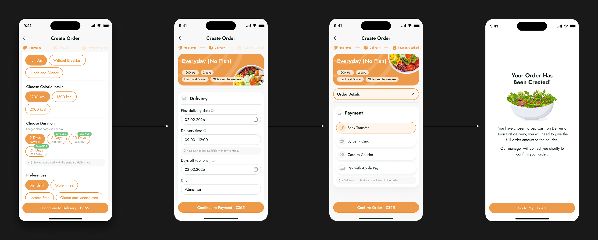
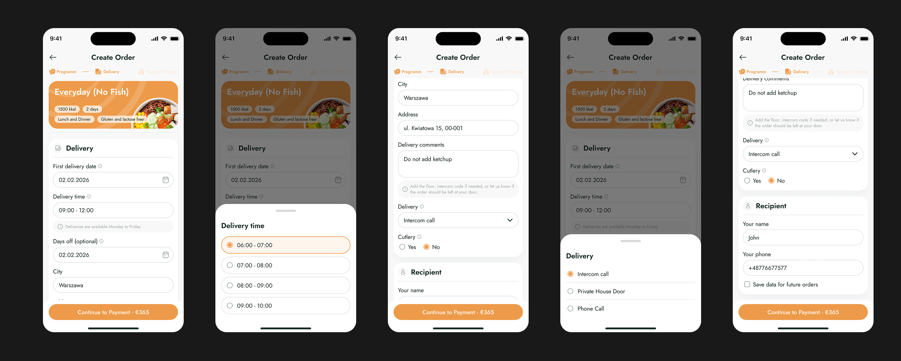

MEAL.PREP
Meal planning & food delivery app
Meal.Prep is a mobile app for planning and ordering meals for days or weeks ahead. Users can build a personalized meal plan based on their dietary preferences and schedule, then manage the entire order in one place.

Challenge
Unlike a typical food delivery app, Meal.Prep requires users to make multiple decisions before placing an order — from dietary preferences and meal selection to planning several days ahead.
The challenge was to make this configuration-heavy experience feel simple and familiar, while designing the complete mobile product from scratch within three weeks and adapting the existing brand to a functional UI.
My role
-
 As the sole designer, I owned the end-to-end product design, from early flows and wireframes to final UI, within three weeks.
As the sole designer, I owned the end-to-end product design, from early flows and wireframes to final UI, within three weeks.
-
Defined the core user flows and interaction patterns for meal planning, ordering, and checkout.
-
Built a scalable design system to keep the product consistent and speed up implementation.
-
Created and tested an interactive prototype, then prepared the designs and components for developer handoff.
User
The user is a busy person who prefers to plan meals ahead rather than decide what to eat every day. They value convenience and want their meal plan to fit their dietary preferences, schedule, and everyday routine.
Selected UX Decisions
Letting users start before signing up
Problem
Requiring an account before users could explore the product would add friction before they had received any value from it.
Design decision
Allow users to start building their meal plan as guests. Registration is introduced only after they have already selected their dietary preferences and started configuring the plan.
-
The result: Users can experience the core value of Meal.Prep before being asked to create an account, while their previous choices carry into the next step.

Turning meal planning into a guided flow
Problem
Creating a meal plan requires users to make several connected choices — dietary preferences, meal type, plan duration, and other options. Showing everything at once would make ordering feel unnecessarily complex.
Design decision
Break the configuration into a guided sequence, grouping related choices and showing users only the information needed at each stage.
-
The result: A multi-parameter meal plan becomes a step-by-step ordering flow rather than one complex configuration screen.

Making recurring delivery flexible
Problem
A multi-day meal plan cannot assume the same delivery schedule works every day. Users may need to choose when deliveries begin, select a convenient time window, or skip particular days.
Design decision
I kept delivery scheduling inside the order flow, allowing users to set the first delivery date and time window and add days off without leaving their meal plan.
-
The result: Users can adapt a recurring meal plan to their actual schedule before committing to the order.

Prioritizing payment over order details
Problem
On the payment screen, users still need access to their order details, but displaying the full summary competes with the information required to complete payment.
Design decision
I made the order summary collapsible: the key information remains visible and the full details stay accessible, without dominating the screen.
-
The result: Payment methods receive visual priority while users can still review their order whenever needed.

Process
The project went through a full design cycle — from market research and moodboard to final UI and testing. Three phases, each with its own focus.

Competitor research
I reviewed meal-planning and food delivery apps, including Level Kitchen, Grow Food, and JustFood, focusing on how they structure plan selection, meal customization, and ordering.
The research showed that most products offered similar functionality, but often presented meal plans and configuration options all at once. For Meal.Prep, I focused on reducing that complexity by grouping related choices and guiding users through the ordering process step by step.

Competitor references
Wireframes & Flow Validation
I mapped the core user flows in low-fidelity wireframes and connected them into a clickable prototype. Testing the complete journey helped me identify missing states, interaction gaps, and points where the ordering flow needed to be simplified.

Prototype in Figma
Concept Exploration
Meal.Prep already had an established brand identity, including its signature orange, but the mobile product had no defined visual language. I explored three directions for translating the brand into a functional app interface.
I selected the third direction because its clear hierarchy, restrained use of brand color, and consistent card-based system made meal plans easier to scan while giving the product a distinct visual identity.


Mobile app UI and improved UX
During the actual app design process, certain shortcomings—such as pages for additional information—came to light that had been overlooked during the prototyping stage. These elements were incorporated directly during the design phase. Overall, the app is quite compact, yet it successfully fulfills its intended purpose: enabling users to order food for several days.

Sign In flow

General flow

Orders/Profile/Chat
Design System
A design system is the foundation of any design, as it ensures consistency and helps avoid errors. I always create design systems for the projects I work on, even for single-page sites. This benefits both me and the developer, as they have all the information needed to build the site. In my designs, I aim to follow an 8-pixel grid.
The design system for this project wasn't large or complex, but it really streamlined the work on the application, allowing me to complete the design quite quickly.


Where the project landed
The application is currently under development and should be ready soon. All design work has been completed.
Contact for verification of completed work: Yuriy Shurhanov (Product Director, FGG, Dubai)
Impact
-
Developed the design within a short timeframe
-
Developing an intuitive food ordering flow
-
Stylistic consistency across the entire application
-
On the design side, a design system was fully prepared for handover to the developers
-
Analysis of competitor apps' weaknesses